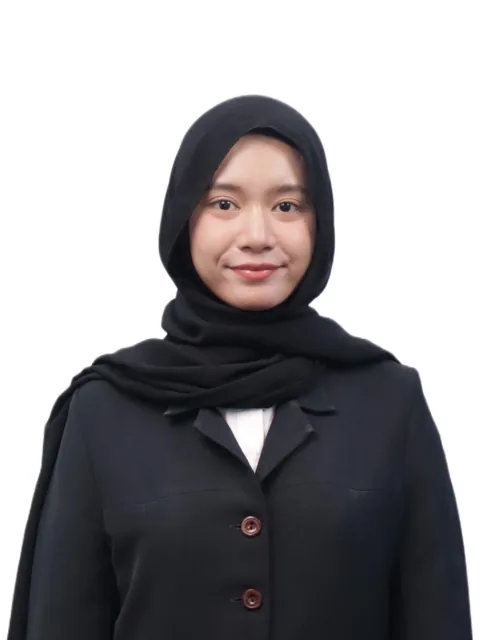

Members
이희정Heejung Lee
PhD Student (2025 ~ )
Research interest: Wearable sensing for inferring human perception, geospatial big data analysis, urban peak exposure analysis using anomaly detection, urban change detection using satellite imagery, AI-based urban vulnerability assessment and preparedness planning
김태윤Taeyoon Kim
PhD Student (2024 ~ )
Research interest: Automated assessment of physical walkability with pedestrian behavioral responses using keypoint detection, automated multi-dimensional urban quality diagnostics, multimodal AI for urban sentiment perception and personalized place recommendation

Reicha Santiana Jesca Adriesti
PhD Student (2026 ~ )
Research interest: TBD
최지원Jiwon Choi
MSc Student (2025 ~ )
Research interest: Generative landscape design and optimization
황예지Yeji Hwang
MSc Student (2025 ~ )
Research interest: Evaluation of serial vision in urban landscapes
강선희Seon Hee Kang
Integrated BSc/MSc Student (2025 ~ )
Research interest: Quantitative assessment of urban greenery quality, automated generation of streetscape improvement plans
BSc Thesis: Interpretable Assessment of Human-Perceived Street-Level Urban Greenery Quality via Panoptic Segmented Visual Features (대한건축학회 우수졸업논문전 학사부문 최우수상)
고서강Seokang Ko
MSc Student (2026 ~ )
Research interest: Keypoint-based vulnerable pedestrian monitoring using CCTV videos
조하윤Hayoun Cho
Undergraduate Student (2026 ~ )
Research interest: TBD
Alumni
PhD
- Dr. Meesung Lee2020–2024Postdoc, University of Alberta, CanadaDoctoral Dissertation: Evaluation of Visual Pleasantness-unpleasantness in Urban Streetscapes through Image-based Micro-scale Environmental Components Detection (이화여자대학교 일반대학원 우수학위논문상)
- Dr. Siyeon Kim2020–2024Postdoc, Purdue University, U.S.Doctoral Dissertation: Pedestrian Discomfort Inference in Urban Environments via CCTV-Based Gait Pattern Analysis with Anomaly Detection (이화여자대학교 일반대학원 우수학위논문상)
MSc
- Suyeon Shin2024–2026Master's Thesis: Capacity-adjusted Crowd Density Analysis in Narrow Urban Alleys Using Active Population Big Data and Raster-skeleton-based Road-space Capacity Estimation
- Taeyoon Kim2024–2026Master's Thesis: Automated Barrier Inference in Pedestrian Walkways from Surveillance Videos through Ankle Keypoint Relationship-Based Anomaly Detection (대한건축학회 우수졸업논문전 장려상)
- Youngseo Shim2024–2026Kunwon Engineering (건원엔지니어링)Master's Thesis: Advancing Automated Evaluation of Urban Environmental Quality Through Qualitative Attribute Inference from Streetscape Images
- Taeeun Kim2022–2024Kunwon Engineering (건원엔지니어링)Master's Thesis: Human Emotion Assessment Using Wearable Sensing and Machine Learning with Anomaly Detection in the Urban Environment (대한건축학회 우수졸업논문전 장려상)
- Yeon Joo Kim2021–2023BISTEP (부산과학기술고등교육진흥원)Master's Thesis: 가상환경을 활용한 속도 및 거리 기반 사람-차량 충돌위험 예측지표 평가: 건설 작업자 및 보행자를 대상으로
- Heejung Lee2021–2024Master's Thesis: Inferring Pedestrian Level of Service for Pathways through Electrodermal Activity Monitoring Using Wearable Physiological Sensors
- Heerim Lee2018–2020Lotte E&C (롯데건설)Master's Thesis: 신체적 및 정신적 부하에 따른 건설작업자의 안전 관련 상황인식 영향 분석 연구
- Meesung Lee2018–2020Master's Thesis: What Factors Affect Public Bike Demand by Purpose?: Integrated Analysis of User's Trip Patterns and Urban Geospatial Big Data
- Siyeon Kim2018–2020Master's Thesis: Framework for Abnormal Situation Identification based on Action Detection and Sequence Analysis: Focusing on Shoplifting
Postdoc
- Seulbi Lee2021Assistant Professor, Incheon National University
Undergraduate Students
- Gaeun Lee2024–2026
- Chaeyeon Yoo2024–2026
- Hajin Cho2023–2025
- Yeoreum Yoon2023–2025
- Saerin Bong2022–2024
- Na-Kyung Kang2023–2024
- Yun Ah Im2020–2021
- Se Eun Gong2020
- ChaeEun Im2018